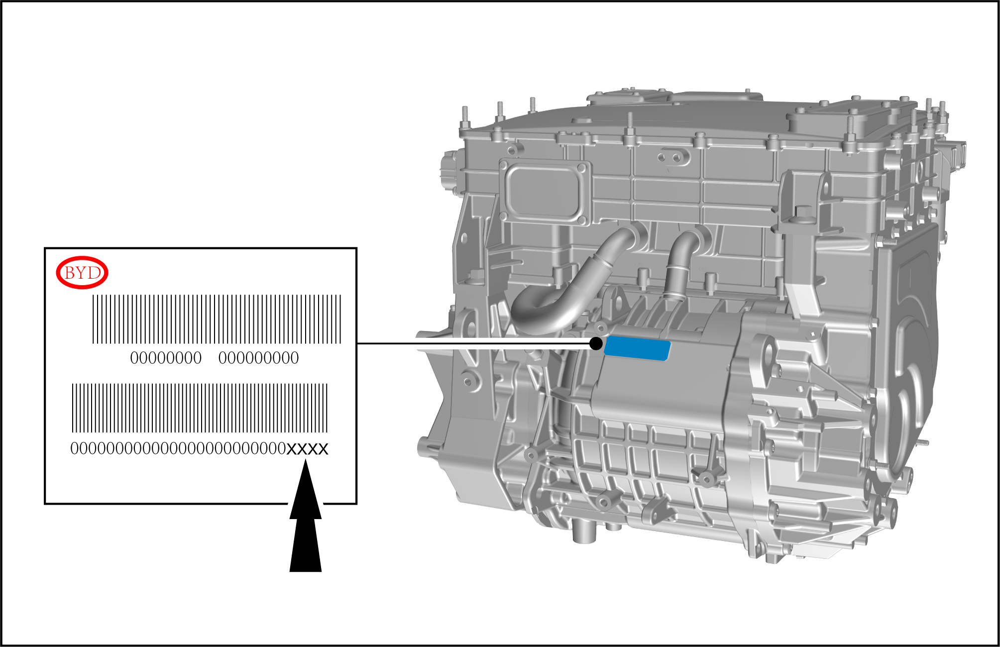

Zero Calibration
Calibration

After the integrated intelligent front drive control module or the drive motor assembly is replaced separately, use the VDS to execute zero position calibration.
-
Record the zero bar code on the motor, and conduct the motor zero calibration with VDS (the latest version) on completion of final assembly.

-
Set the START/STOP button to ON, shift to Gear-P, connect and start VDS, and select “Vehicle Diagnosis System”.
-
Select “Passenger Car”.
-
Select “EV system”.
-
Select "Song PLUS EV".
-
Enter VIN for reading.
-
Select “ECU Module” to enter the scan.
-
After scanning, select “Front drive motor control module”, and tap the right arrow to enter the diagnosis page.
-
Select “Data Flow”.
-
Check and record the zero value of the original front drive motor.
-
Return to the front motor control unit page, and tap “Motor zero calibration”.
-
Go to zero barcode of the motor equipped on the vehicle (be case sensitive).
Caution If the barcode is entered correctly, "Operation Succeeded" will be displayed, indicating that the zero calibration is successful (if the barcode is entered incorrectly, "Negative Response" will be displayed, and the zero value will become the default value).
If the barcode is entered correctly, "Operation Succeeded" will be displayed, indicating that the zero calibration is successful (if the barcode is entered incorrectly, "Negative Response" will be displayed, and the zero value will become the default value). -
Poweroff and restart of vehicle and VDS page operation: return to the front motor control unit page, repeat the operation of Step H, read the data flow to check whether zero calibration is successful and whether the zero value is correct (i.e. whether the latest zero value is consistent with that of the current motor barcode).
Caution-
After zero calibration, the zero value after calibration can be read only after the vehicle is powered off and restarted.
-
If the zero barcode of the motor is entered incorrectly, "Negative Response" will be displayed. You may try a few times. If "Negative Response" is still displayed, record the barcodes of the motor and motor control module, and the VIN, and timely feed back to the manufacturer.
-
The last four digits of the zero barcode on the motor are zero values. Check the zero values displayed in the VDS data flow against those on the motor barcode.
-
-